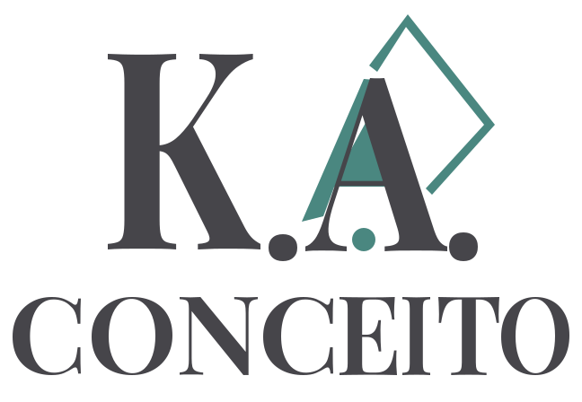

Uniformes & Bordados
Barreiras · Bahia
WhatsApp · UniformesPeça seu orçamento
→
WhatsApp · BordadosPersonalize suas peças
→
Instagram@bordados_barreiras_k.a
→
LocalizaçãoComo chegar
→
© K.A. Conceito

Uniformes & Bordados
Barreiras · Bahia
© K.A. Conceito